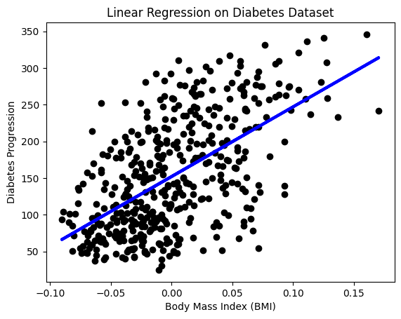

Lab#
This Jupyter Notebook demonstrates the usage of the aibasics package, including initializing a workspace, mounting Google Drive on Colab, and using HyFI to manage configurations.
Show code cell content
# Install aibasics package
%pip install aibasics
import numpy as np
from sklearn.linear_model import LinearRegression
# 샘플 데이터
X = np.array([[1, 1], [1, 2], [2, 2], [2, 3]])
y = np.dot(X, np.array([1, 2])) + 3
# 선형 회귀 모델 훈련
model = LinearRegression().fit(X, y)
# 훈련된 모델로 새로운 데이터에 대한 예측 수행
model.predict(np.array([[3, 5]]))
array([16.])
from sklearn import datasets, linear_model
import matplotlib.pyplot as plt
# 당뇨병 데이터셋 로드
diabetes = datasets.load_diabetes()
X = diabetes.data[:, None, 2] # BMI 특징 사용
y = diabetes.target
# 선형 회귀 모델 생성 및 학습
model = linear_model.LinearRegression()
model.fit(X, y)
# 결과 시각화
plt.scatter(X, y, color="black")
plt.plot(X, model.predict(X), color="blue", linewidth=3)
plt.xlabel("Body Mass Index (BMI)")
plt.ylabel("Diabetes Progression")
plt.title("Linear Regression on Diabetes Dataset")
plt.show()

import pandas as pd
import numpy as np
import matplotlib.pyplot as plt
import seaborn as sns
from sklearn import datasets
# Load the diabetes dataset
diabetes = datasets.load_diabetes()
# Convert to DataFrame for easier analysis
diabetes_df = pd.DataFrame(diabetes.data, columns=diabetes.feature_names)
diabetes_df["target"] = diabetes.target
# 1. Overview of the dataset
print("Data Overview:\n")
print(diabetes_df.head())
# 2. Descriptive statistics
print("\nDescriptive Statistics:\n")
print(diabetes_df.describe())
# 3. Distribution of the target variable
plt.figure(figsize=(8, 6))
sns.histplot(diabetes_df["target"], kde=True)
plt.title("Distribution of Diabetes Progression")
plt.xlabel("Diabetes Progression")
plt.ylabel("Frequency")
plt.show()
# 4. Correlation analysis
plt.figure(figsize=(10, 8))
sns.heatmap(diabetes_df.corr(), annot=True, fmt=".2f")
plt.title("Correlation Matrix")
plt.show()
# 5. Visualizing relationships between variables
# Pairplot for a subset of variables
sns.pairplot(diabetes_df[["bmi", "bp", "s1", "target"]])
plt.suptitle("Pairplot of Selected Features", y=1.02)
plt.show()
Data Overview:
age sex bmi bp s1 s2 s3 \
0 0.038076 0.050680 0.061696 0.021872 -0.044223 -0.034821 -0.043401
1 -0.001882 -0.044642 -0.051474 -0.026328 -0.008449 -0.019163 0.074412
2 0.085299 0.050680 0.044451 -0.005670 -0.045599 -0.034194 -0.032356
3 -0.089063 -0.044642 -0.011595 -0.036656 0.012191 0.024991 -0.036038
4 0.005383 -0.044642 -0.036385 0.021872 0.003935 0.015596 0.008142
s4 s5 s6 target
0 -0.002592 0.019907 -0.017646 151.0
1 -0.039493 -0.068332 -0.092204 75.0
2 -0.002592 0.002861 -0.025930 141.0
3 0.034309 0.022688 -0.009362 206.0
4 -0.002592 -0.031988 -0.046641 135.0
Descriptive Statistics:
age sex bmi bp s1 \
count 4.420000e+02 4.420000e+02 4.420000e+02 4.420000e+02 4.420000e+02
mean -2.511817e-19 1.230790e-17 -2.245564e-16 -4.797570e-17 -1.381499e-17
std 4.761905e-02 4.761905e-02 4.761905e-02 4.761905e-02 4.761905e-02
min -1.072256e-01 -4.464164e-02 -9.027530e-02 -1.123988e-01 -1.267807e-01
25% -3.729927e-02 -4.464164e-02 -3.422907e-02 -3.665608e-02 -3.424784e-02
50% 5.383060e-03 -4.464164e-02 -7.283766e-03 -5.670422e-03 -4.320866e-03
75% 3.807591e-02 5.068012e-02 3.124802e-02 3.564379e-02 2.835801e-02
max 1.107267e-01 5.068012e-02 1.705552e-01 1.320436e-01 1.539137e-01
s2 s3 s4 s5 s6 \
count 4.420000e+02 4.420000e+02 4.420000e+02 4.420000e+02 4.420000e+02
mean 3.918434e-17 -5.777179e-18 -9.042540e-18 9.293722e-17 1.130318e-17
std 4.761905e-02 4.761905e-02 4.761905e-02 4.761905e-02 4.761905e-02
min -1.156131e-01 -1.023071e-01 -7.639450e-02 -1.260971e-01 -1.377672e-01
25% -3.035840e-02 -3.511716e-02 -3.949338e-02 -3.324559e-02 -3.317903e-02
50% -3.819065e-03 -6.584468e-03 -2.592262e-03 -1.947171e-03 -1.077698e-03
75% 2.984439e-02 2.931150e-02 3.430886e-02 3.243232e-02 2.791705e-02
max 1.987880e-01 1.811791e-01 1.852344e-01 1.335973e-01 1.356118e-01
target
count 442.000000
mean 152.133484
std 77.093005
min 25.000000
25% 87.000000
50% 140.500000
75% 211.500000
max 346.000000